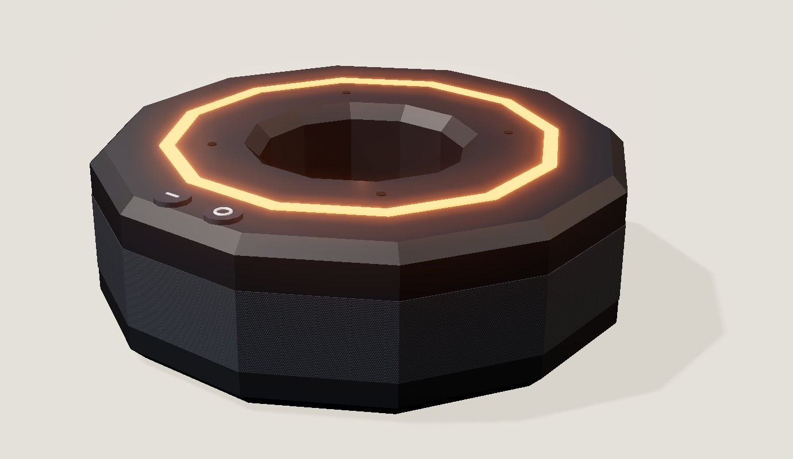
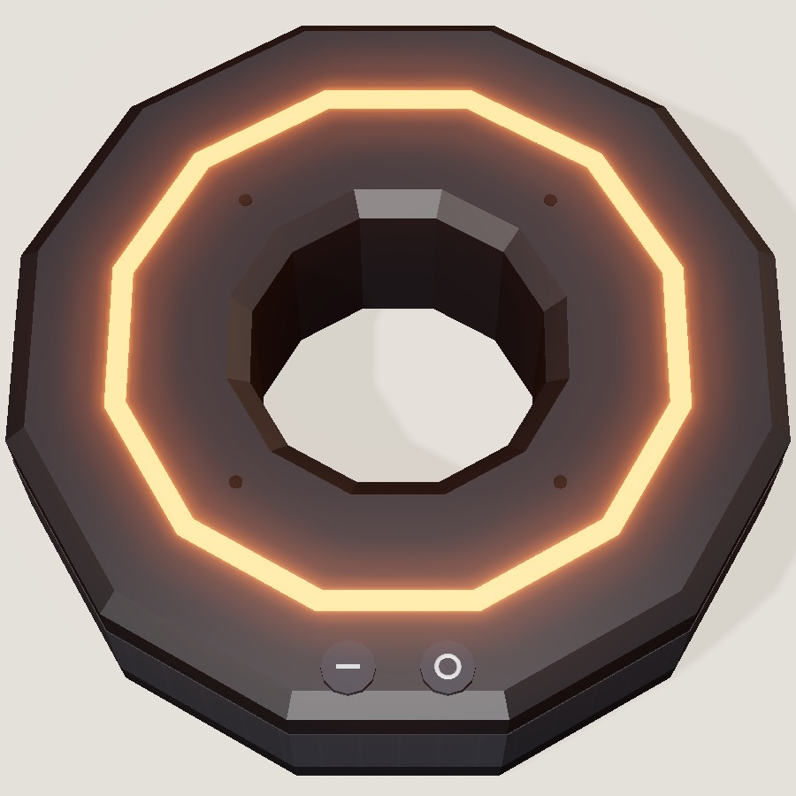
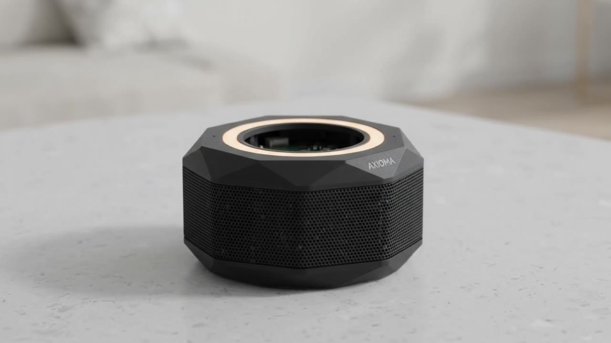

Un router universal de inteligencias artificiales, con criterio.
Une varias IA por API, por línea de comandos o instaladas en tu computador. Elige la mejor para cada tarea, revisa sus errores y crea con plantillas de alto nivel.
Innovación tecnológica y sociedad
Foto: Pexels
Hay muchas IA, pero ninguna tiene criterio.
Estudiantes, docentes y pymes usan IA a diario. Reciben respuestas que suenan seguras pero pueden estar mal, y pierden tiempo saltando de una IA a otra y repitiendo el pedido.
01
Inventa con seguridad
No avisa cuando se equivoca.
02
Cada IA por separado
Elegir y combinarlas a mano es difícil.
03
Parte de cero
Repiensa todo en cada pedido: lento y caro.
04
Resultado genérico
Sin estructura, todo sale parecido.
Pides una presentación: una IA inventa un dato, otra olvida la estructura y necesitas cinco intentos.
AXIOMA
Foto: Pexels
A cada problema, una función.
EL USUARIO DICE
AXIOMA RESPONDE
EN PANTALLA
«No sé qué IA usar»
El router elige la mejor para cada tarea.
Texto → IA de texto
«Inventa datos»
Contraprueba: otra IA lo revisa antes.
1 dato corregido
«Todo sale genérico»
Plantillas de alto nivel, ya probadas.
Plantilla: informe
«Es lento y caro»
Usa la IA más barata que sirva.
Máximo 3 IA
«Repite errores»
Memoria de lo que ya aprobaste.
Caso aprobado
Son hipótesis: las validaremos con estudiantes y docentes reales.
AXIOMA
Boceto: así funciona el router.
01
Pedido
«Haz una presentación sobre el agua»
02
Router
Elige la plantilla y las IA justas para la tarea.
03
Conectores
API · Claude, Gemini, GPT
CLI · terminal
Local · en tu PC
04
Contraprueba
Otra IA busca errores y datos sin fuente.
05
Aprobación
Una persona revisa y aprueba.
POR QUÉ LAS PLANTILLAS HACEN QUE LA IA PIENSE MENOS
Sin plantilla
Decide todo desde cero: orden, estilo y pasos.
Con plantilla
La estructura ya está probada; solo completa lo nuevo.
Resultado
Más rápido, más barato y con menos errores.
AXIOMA
Modelo 3D: AXIOMA Dona.


13 cm
ancho
4 cm
alto
También es control remoto
Maneja la TV, el aire acondicionado y las luces por infrarrojo y Wi-Fi.
«Apaga la tele» · «Sube el aire»
AXIOMA
Por dentro del prototipo.

1
Tapa
anillo de luz
2
Micrófonos
escuchan en 360°
3
Rejilla
del parlante
4
Parlantes
uno por lado
5
Placa
conexión y control
6
Base
carga USB-C
AXIOMA
La app: así se usa AXIOMA.
01
Plantilla e IA
Muestra qué plantilla y qué IA eligió.
02
Contraprueba
Avisa qué error encontró y lo corrige.
03
Tú decides
Nada se crea sin tu aprobación.
Maqueta de la app con un ejemplo simulado.
AXIOMA
Nuevo pedido
TU PEDIDO
Crea una presentación de 6 diapositivas sobre el agua.
PROPUESTA
1. El agua en la Tierra
2. El ciclo del agua
3. Cuánta usamos
4. Cómo cuidarla…
DETALLES
Plantilla
Presentación escolar
Texto
Claude
Datos
Gemini
Imágenes
IA local
Contraprueba
1 dato corregido
Memoria
tu estilo aprobado
Editar
Aprobar y crear
AXIOMA
En qué se basa: seis estudios.
Combinar modelos
Elegir el modelo justo puede igualar al mejor con mucho menos costo.
Chen et al., 2023 → router
Alucinaciones
Los modelos inventan datos con total seguridad.
Ji et al., 2023 → problema
Debate entre IA
Varias IA que se critican aciertan más.
Du et al., 2023 → Contraprueba
Autocorrección
Revisar y corregir antes de entregar mejora la respuesta.
Madaan et al., 2023 → revisión
Listas y plantillas
Un procedimiento probado evita errores sin pensarlo todo otra vez.
Gawande, 2009 → plantillas
Respuestas con fuentes
Buscar documentos antes de responder reduce lo inventado.
Lewis et al., 2020 → fuentes
Chen, Zaharia y Zou (2023), FrugalGPT · Ji et al. (2023), ACM Computing Surveys · Du et al. (2023), Multiagent Debate · Madaan et al. (2023), Self-Refine · Gawande (2009), The Checklist Manifesto · Lewis et al. (2020), NeurIPS.
AXIOMA
Se puede hacer hoy, con bajo costo.
QUÉ NECESITAMOS
IA por API (plan gratuito)
$0
IA local y herramientas CLI
$0
Página web (plan gratuito)
$0
Plantillas y pruebas
8 semanas
Económico
Menos intentos y la IA más barata que sirva.
Ambiental
Pensar menos gasta menos energía.
Social
IA confiable para estudiantes y pymes.
Ética
Una persona decide; datos privados.
ETAPA 1 · HOY
3 IA + plantillas
ETAPA 2
Memoria
ETAPA 3
Más conectores
ETAPA 4
Pymes y empresas
Aporta a los ODS 4 Educación de calidad · 9 Industria e innovación · 12 Consumo responsable.
AXIOMA
AXIOMA une las IA, elige la mejor y revisa sus errores.
¿POR QUÉ VALE LA PENA?
Confianza
Antes de entregar, otra IA busca el error.
Ahorro
Menos intentos, menos gasto y menos energía.
Para todos
Lo mejor de cada IA, gratis para empezar.
Próximo paso: probarlo con nuestro curso y medir tiempo, intentos y errores con y sin AXIOMA.